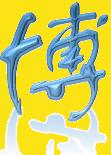

单机模式
联机模式
游戏规则
中秋博饼，起源于福建厦门，由郑成功驻兵时发明，是闽南地区特有的由饼文化外延的一种传统民俗活动。博饼是中秋节时的一种大众娱乐活动，用六粒骰子投掷结果组合来决定参与者的奖品。传统的奖品为大小不同的月饼，共计一会，设状元1个，对堂2个，三红4个，四进8个，二举16个，一秀32个。相传这种游戏可以预测人未来一年内的运气。 在闽南地区，中秋赌饼也已成为一种商业活动和大众游戏。福建人民出版社1985年出版的《福建风物志》记载：在闽南一带，中秋节有“夺状元饼”的习俗。在台湾中部和东部地区的一些城乡以及台湾离岛金门县，还流行中秋博状元饼的习俗。在金门，金城镇吴厝社区发展协会每年庆祝中秋社区联欢晚会，都有博状元饼大赛。
本游戏仅供娱乐，请勿过度沉迷